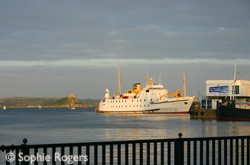

Air & Sea services to the Isle's of Scilly
Whether you choose to cruise on Scillonian III or to fly with Skybus, you will be sure to enjoy the natural beauty of the Islands whatever the season. Exotic plants and wild flowers, ancient cairns and crumbling castles, sparkling white sands and an azure sea - all the treasures of the Islands await you 28 miles from Land's End.
Fly to the Isles of Scilly on Skybus the Islands' own airline from either Land's End or Newquay Airports for your Scilly Island day trip. Your flight includes a spectacular view of the Cornish countryside and coastline. On your approach to Scilly you see the Islands, their white sand beaches, the sparkling turquoise sea.
Sail to the Scilly Isles aboard Scillonian III. Departing Penzance Quay, Scillonian III sails past Newlyn, Mousehole, the Minack Theatre and Wolf Rock Lighthouse. An informative commentary is broadcast during the start of your trip towards Scilly. Your first glimpse of the islands as you approach through Crow Sound or around St. Mary's, is a magical discovery of this wonderful world apart.
Contact Details
Airplane Services
- Isles of Scilly SkyBus (01736 334249)
Travel Centre, Quay Street, Penzance
- Lands End Airport (01736 788771)
Land's End Airport, St. Just, Penzance, TR19 7RL
www.islesofscilly-travel.co.uk
Ground Connections
- SkyBus Bus Service (01736 334249)
Station Road, Penzance
Ferry Service's
- Isles of Scilly Steamship Co. (01736 334220 or 08457 105555)
Travel Centre, Quay Street, Penzance
text from www.islesofscilly-travel.co.uk